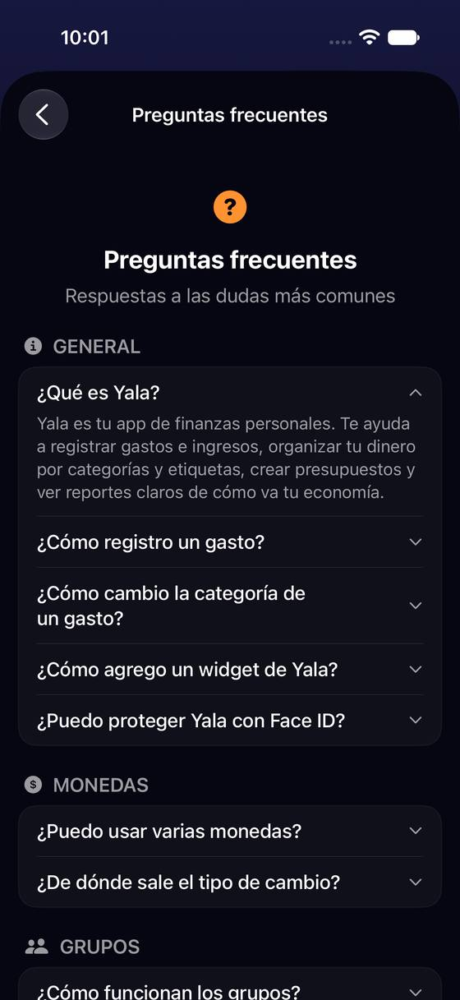
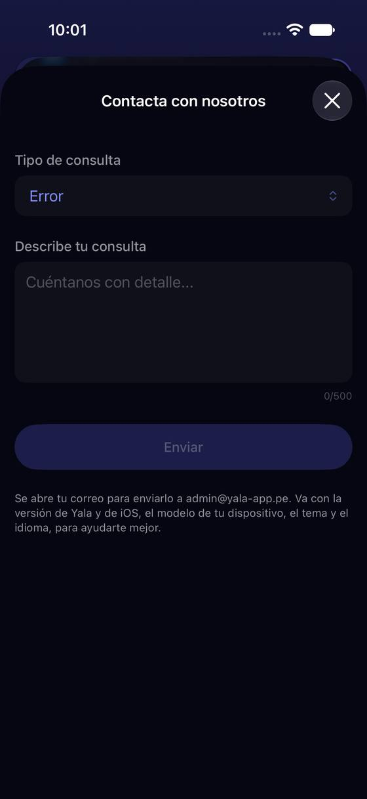
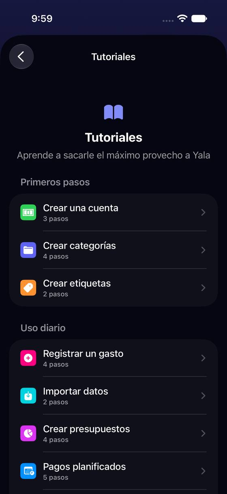
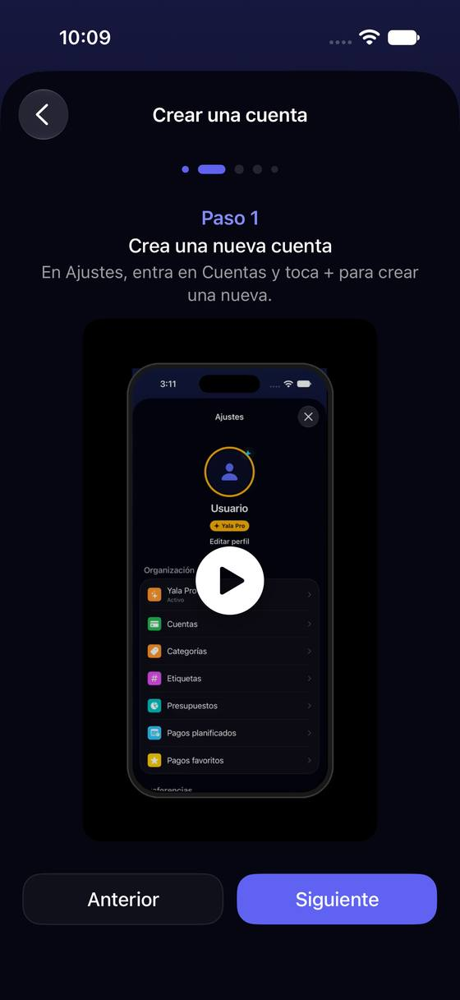
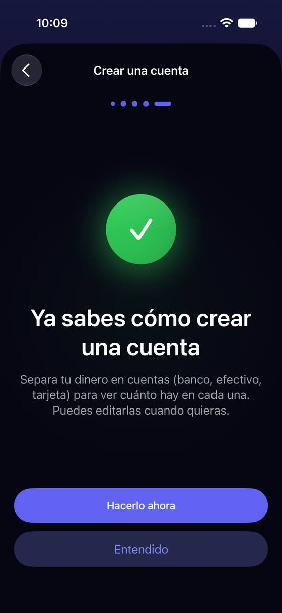

La ayuda vive al fondo de Ajustes, las preguntas no se buscan y «Escríbenos» depende de la app Mail
Hoy
Capturas del simulador (app de origin/2.3, semillas de prueba). Pasos hoy: escribir a soporte: 2 toques + 3 deslizamientos, y luego la app Mail






De dónde sale
- Captura Capturas a01-abajo-3, h05-h07, h01-h04.
- Código
FAQView.swift:195-211: 15 preguntas; sin campo de búsqueda. - Captura Captura h07: «Se abre tu correo para enviarlo a admin@yala-app.pe. Va con la versión de Yala y de iOS, el modelo…».
- Hipótesis Sin cuenta en Mail no se probó: el simulador no tiene Mail. Comprobar en el iPhone 14 sin cuenta.
- Código
TutorialCatalog.swift:34-46: 12 tutoriales; L15 añadió «Hacerlo ahora».
Las opciones
De 3 a 5 alternativas con el mismo caso. Desliza cada recorrido; el anillo cian marca dónde toca Andrea.
Una sola «Ayuda» arriba de la lista, con buscador y «Escríbenos» siempre visible
Las seis filas de «¿Necesitas ayuda?» (al fondo de la lista, cuarta pantalla) pasan a una fila «Ayuda» en la parte alta de Ajustes. Dentro: un buscador sobre las preguntas frecuentes, los tutoriales debajo y un botón «Escríbenos» fijo abajo. Valorar y Recomendar se quedan al fondo, junto a Legal.
A favor
- Pedir ayuda queda a 2 toques de Ajustes, sin bajar cuatro pantallas.
- El buscador encuentra la respuesta con sus palabras.
- Ajustes adelgaza en cinco filas.
En contra
- Valorar y Recomendar pierden visibilidad (puede bajar alguna valoración).
- Hay que escribir palabras clave por pregunta, en 16 idiomas.
Cada respuesta lleva un botón «Ir a…»
Sin mover nada: las respuestas de las preguntas frecuentes terminan con un botón al sitio del que hablan («Ir a Exportar», «Ir a Face ID», «Ver Yala Pro»). Hoy explican el camino con palabras y la persona tiene que volver atrás y buscarlo.
A favor
- Barato: un botón por respuesta.
- Ataja el ir y volver de leer una ruta.
En contra
- No ayuda a encontrar la pregunta (sigue sin buscador, 15 preguntas en 5 bloques).
- La ayuda sigue al fondo de Ajustes.
«Escríbenos» que funciona aunque no haya Mail configurado
El formulario de contacto termina abriendo la app Mail («Se abre tu correo para enviarlo a admin@yala-app.pe»). Si el iPhone no tiene una cuenta en Mail, no hay a dónde ir. La hoja ofrece entonces «Copiar correo y mensaje» y «Enviar por WhatsApp», y dice qué datos se adjuntan (versión, modelo, tema, idioma).
A favor
- Nadie se queda sin poder escribir.
- Dice qué se envía (confianza para P2 y P7).
En contra
- WhatsApp de soporte es un canal más que atender.
- Comprobar si hay Mail configurado (
MFMailComposeViewController.canSendMail).
Tutoriales cortos que llevan a hacerlo (reabre la lista de 12)
Los 12 tutoriales son vídeos de 2 a 5 pasos con «Siguiente»; al final, «Hacerlo ahora». Muchos repiten lo de Primeros pasos (F13 de la revisión del usuario nuevo). Se quedan los 6 que no se descubren solos (importar, pagos planificados, filtros del Panel, Bandeja, Apple Pay, favoritos), cada uno con «Hacerlo ahora» como primer botón y los pasos plegados.
A favor
- Menos lista y menos repetición con Primeros pasos.
- Lleva a la acción de entrada.
En contra
- Reabre una pantalla que se diseñó con la guía de 7 pasos: hay que decidirlo con el onboarding (sesión de onboarding 2.3).
- Quitar tutoriales puede dejar sin guía a quien llegó sin Primeros pasos.
Lado a lado
La última pantalla de cada recorrido, frente a hoy.
Comparación
| Opción | Pasos para el caso (maqueta) | Esfuerzo | Riesgo | Reabre |
|---|---|---|---|---|
| Hoy | escribir a soporte: 2 toques + 3 deslizamientos, y luego la app Mail | — | — | — |
| E1 · Una sola «Ayuda» arriba de la lista, con buscador y «Escríbenos» siempre visible | Escribir a soporte: 3 toques (avatar › Ayuda › Escríbenos), hoy 2 toques + 3 deslizamientos | medio | bajo | — |
| E2 · Cada respuesta lleva un botón «Ir a…» | Exportar desde su pregunta: 2 toques desde la respuesta | bajo | bajo | — |
| E3 · «Escríbenos» que funciona aunque no haya Mail configurado | Igual que hoy, pero termina | bajo | bajo | — |
| E4 · Tutoriales cortos que llevan a hacerlo (reabre la lista de 12) | — | medio | medio | la lista de tutoriales (L15) |
Lente de perfiles
Perfiles simulados, no entrevistas Los siete perfiles de la revisión del usuario nuevo, usados como lentes. riesgo alto de trabarse · medio · bajo.
| Perfil | Hoy | E1 | E2 | E3 | E4 |
|---|---|---|---|---|---|
| P1 · Migrante de Excel | lee las preguntas | busca como en Google | — | — | importar, arriba |
| P2 · Principiante abrumado | no encuentra su duda | encuentra la respuesta | no se pierde | le dicen qué pasa | menos guía |
| P3 · Anotador rápido que no lee | no baja hasta Ayuda | botón fijo | un toque | — | hace, no lee |
| P4 · Experto de otra app | — | — | — | — | — |
| P5 · Llega por una invitación de grupo | Ayuda al fondo | — | — | — | — |
| P6 · Varias monedas y tarjeta | — | — | — | — | — |
| P7 · Texto grande, a veces en iPad | sin Mail no escribe | teclear | botón grande | WhatsApp, que conoce | vídeos pequeños |
Recomendación: E1
Una sola «Ayuda» arriba, con buscador y «Escríbenos» fijo, junta en un sitio lo que hoy está repartido al fondo; E2 y E3 son baratos y se suman. E4 se decide con la sesión de onboarding, porque toca la relación entre tutoriales y Primeros pasos.
Qué decide Jürgen
- ¿«Ayuda» sube como una sola fila con buscador y «Escríbenos» fijo (E1)?
- ¿Botón «Ir a…» en cada respuesta (E2)? ¿Salida sin Mail (E3)? Probar antes en el iPhone 14 sin cuenta de Mail.
- ¿Se recortan los tutoriales a los que no se descubren solos (E4)? Mejor con la sesión de onboarding.
Revisión por vistas 2.3 · Perfil, Más, Ajustes generales, Pro y ayuda. Maquetas en HTML con datos ficticios: no son la app. Pasos contados sobre las maquetas; los de «Hoy», en el simulador o en el código citado.